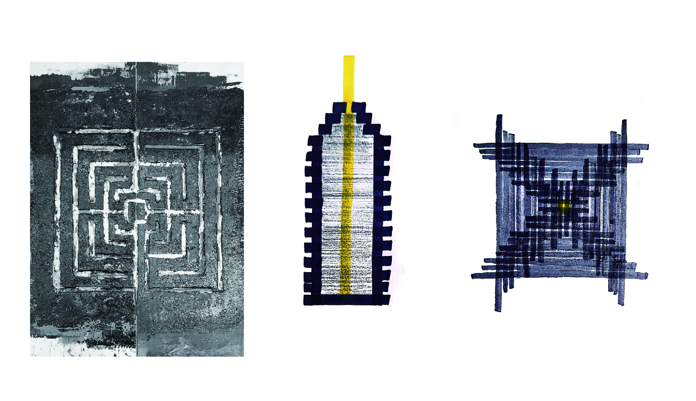
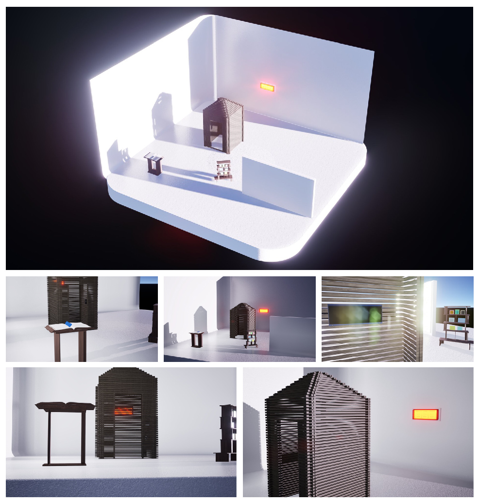

빈집 — 구조물
목재 결구 / 1200×1200×2700mm
사람 한 명이 들어갈 수 있는 규격. 안에서는 밖을 인지하고 소통할 수 있지만 닿을 수는 없다. 입구는 좁고 높으며, 들어서면 더 나아갈 공간 없이 가로막힌 벽을 마주한다. 검은 각목을 켜켜이 쌓아 무게감을 주는 동시에, 목재 사이로 희미한 빛이 스며들게 해 열망과 희망을 표현했다.
프로젝트는 ‘빈집’과 ‘털기’라는 두 단어 사이의 근본적인 모순에서 시작한다. 보통 ‘털기’란 무언가 귀한 것을 얻기 위한 목적 있는 행위지만, ‘빈집’은 가져갈 것이 아무것도 없는 텅 빈 상태를 의미한다. 제목인 ‘빈집 털기’는 이미 비어 있음을 전제하는 공간에서조차 무언가를 찾아내려는 모순된 시도를 가리킨다. 아무것도 남아 있지 않은 장소를 뒤지고 탐색하는 행위는 부재를 확인하는 과정이자 동시에 의미 부여를 통해 부재를 가리려는 우리의 모습을 비유한다.
‘털어갈 것이 전혀 없는 곳을 필사적으로 턴다’라는 역설적인 행위 자체는 프로젝트가 보여주고자 하는 본질적인 논제이다. 프로젝트는 실체가 없음을 알면서도 멈추지 않는 의미 부여의 행위에서 출발한다. 공허함과 무의미함을 외면하는 대신, 이를 감상 가능한 ‘빈집’이라는 하나의 입체적 장면으로 치환하려는 네 명의 참여자(A, B, C, D)의 공동 시각 예술 작업이다.
참여자들은 이 과정에서 ‘빈집’을 공허하고 무의미한 인간의 본질로, ‘빈 집을 터는 행위/털기’라는 인간의 습성을 하나의 대상이자 장면으로 재구성하며, 그 안에서 어떻게든 의미를 찾아내려는 4가지의 과정(A-B-C-D)으로 치환해 경험한다.
1 A는 빈 집을 짓습니다.
2 B는 빈 집을 털러 갔습니다.
3 C는 여전히 빈 집에 있습니다.
4 D는 빈 집에서 나왔습니다.
이미 비어 있음을 알면서도 우리는 그 자리를 반복해서 들여다본다. 끝내 아무것도 발견할 수 없지만, 그 과정을 쉽게 멈추지 못한다. 이 전시는 비어 있는 상태(빈집)를 채워야 할 문제로 다루지 않는다. 관람객은 오히려 아무것도 없다는 걸 알면서도 ① 그 공간을 만드는, ② 그 안을 뒤지는, ③ 그 자리에 머무는, ④ 그곳을 벗어나는, A, B, C, D가 된다.
이 전시를 통해 결국 우리는 비어 있음을 알면서도 반복하는 이 행위가 공허함을 견디며 삶을 살아가기 위한 하나의 방식임을 제시한다.
*빈집: 누구나 한 번쯤은 겪는 공허와 무의미의 상태.
빈집을 형상화한 구조물이 전시장 중앙에 놓이고, 작가들의 작품은 각자의 방식으로 빈집과 관계를 맺으며 그 안팎에 배치된다. 관람객은 빈집의 내외부를 오가며 A·B·C·D가 되어 작품을 경험한다.
A, B, C, D의 행위는 논리 게임의 명제처럼 제시된다. 관람객은 이 간결한 단서들을 통해 각 인물이 ‘빈집’이라는 공간 안에서 어떤 시점에 놓여 있는지, 그리고 ‘빈집’을 어떻게 감각하고 있는지 추론하게 된다.


구조물은 1200 × 1200 × 2700 mm의, 사람이 한 명 정도 들어갈 수 있는
규격으로 제작된다. 재료는 30 × 30 × 2700 mm의 각재를 활용하여 적절한
재단을 통해 결구 방식으로 조립된다. 구조물 안에서 사람은 밖을 인지하고
소통할 수 있지만, 닿을 수는 없다. 입구는 좁고 높다. 구조물에 들어가면
바로 더 나아갈 공간 없이 가로막힌 벽을 마주하게 된다.
빈 집에 들어섰을 때의 불안과 압박감, 그리고 의미의 추궁은 결국
자신에게서 나올 따름이다. 타인이 알 수 없는 개인만의 절대 고독적인
영역을 마주할 때의 고통, 삶 속에서 느낄 수 있는 허무함, 그 도망치고
싶은 불편함, 그럼에도 살아가기 위해 하는 의미부여에 대한 강박적인 집착,
그리고 희망을 바라보려는 노력. 그것을 물질을 통해 불편한 공간으로
구현해보고, 그 불편함을 마주해본다. 검은 각목들을 켜켜이 빼곡하게 쌓아
구조물의 무게감을 주는 동시에, 그 목재들 사이로 희미한 빛이 스며들게
함으로써 우리의 열망-희망을 표현하고자 했다.
그 좁은 공간 속에서의 불편함은 개개인에게 어떤 행위들을 촉발할 것인가.
그 공간 속에서 무언가를 찾고자 할 수도, 그대로 머물 수도, 벗어날 수도
있다. ‘빈집털기’라는 모순된 시도는 이 구조물을 통해 구체화된다.


사람 한 명이 들어갈 수 있는 규격. 안에서는 밖을 인지하고 소통할 수 있지만 닿을 수는 없다. 입구는 좁고 높으며, 들어서면 더 나아갈 공간 없이 가로막힌 벽을 마주한다. 검은 각목을 켜켜이 쌓아 무게감을 주는 동시에, 목재 사이로 희미한 빛이 스며들게 해 열망과 희망을 표현했다.


텅 빈 집과 공허한 본질을 감추기 위해 복잡하고 그럴싸한 지침서를 제작한다. 백과사전을 연상시키는 형태로 대단한 진리가 담긴 듯 보이지만, 속을 채운 것은 알맹이 없는 내용이다. 과잉된 체계가 정교할수록 빈집의 공허함은 더욱 철저히 가려진다.

허상의 의미를 강박을 통해 드러낸다. 집에서 털어낸 7가지 강박을 각각 두 장의 이미지(강박이 가득 찬 집 / 사라진 집)로 만들어 총 14점을 진열장에 전시한다. 소중한 것을 보관하는 진열장의 형식을 빌려, 붙들어온 대상이 본래 아무 의미도 없었음을 보여준다.

기억의 비지속성과 가변성을 탐구한다. 백색 화면에 일상의 장면이 쌓였다 사라지고, 사운드 오브제를 채널 돌리듯 조작하면 여러 국가의 라디오 사운드가 실시간으로 개입한다. 동일한 장면조차 현재의 조건에 의해 끊임없이 재구성됨을 감각하게 한다.

유한성을 정면으로 응시하며 집이라는 견고한 시스템에서 나와 해방된다. 영상 속 인물이 되어 연속적이고 무의미한 행위를 반복하고, ‘영업중’ 전광판을 통해 존재할 수밖에 없을 때 느끼는 권태(공허)를 객관적 텍스트로 송출한다. 공허는 빈 집을 나서도 지속되며 삶에 동반되는 것임을 보여준다.